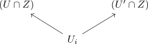
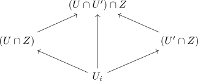

stalk of a direct image sheaf functor for a subset
Proposition
Let $Z \subseteq X$ be a subset, $\mathcal{F}: \mathrm{Op}(Z)^{\mathrm{op}} \rightarrow \mathrm{Ab}$ a sheaf Then for $x \in Z$ the stalk of the direct image sheaf is given by
\begin{align*}
(\iota_*\mathcal{F})_x = \mathcal{F}_x
\end{align*}
Proof
\begin{align*}
\iota^{-1}: \mathrm{Op}(X)^{\mathrm{op}} \rightarrow \mathrm{Op}(Z)^{\mathrm{op}}
\end{align*}
Then let $U_i \subseteq Z$ be open in $Z$. Then we have to show that the comma category is nonempty and connected.
It is nonempty, since we may choose an open subset $U$ such that $U \cap Z = U_i$ or $\iota^{-1}[U] = U_i$ and the identity.
Suppose there exist


in the opposite category.
Hence the comma category is connected.